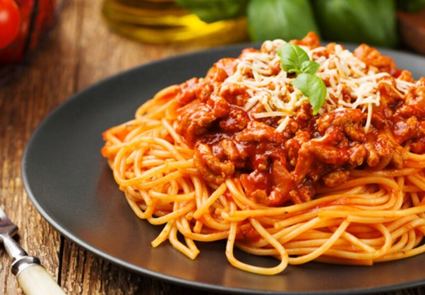

SHPAGETTI BOLOGNESE RECIPE

Description:
Spaghetti Bolognese is a classic Italian pasta dish made with a rich meat sauce. The sauce is typically made with ground beef, tomatoes, onions, and various herbs and spices, served over spaghetti pasta. It's a hearty and comforting meal that is loved by many.
Ingredients:
- 400g spaghetti
- 300g ground beef
- 1 onion, finely chopped
- 2 cloves garlic, minced
- 1 can (400g) diced tomatoes
- 2 tablespoons tomato paste
- 1 teaspoon dried oregano
- Salt and pepper to taste
- Grated Parmesan cheese for serving
Steps:
- Cook the spaghetti according to package instructions; drain and set aside.
- In a large skillet, heat some oil over medium heat. Add the chopped onion and minced garlic, sauté until softened.
- Add the ground beef to the skillet, cook until browned.
- Stir in the diced tomatoes, tomato paste, oregano, salt, and pepper. Simmer for about 15-20 minutes until the sauce thickens.
- Serve the sauce over the cooked spaghetti and sprinkle with grated Parmesan cheese.
Home